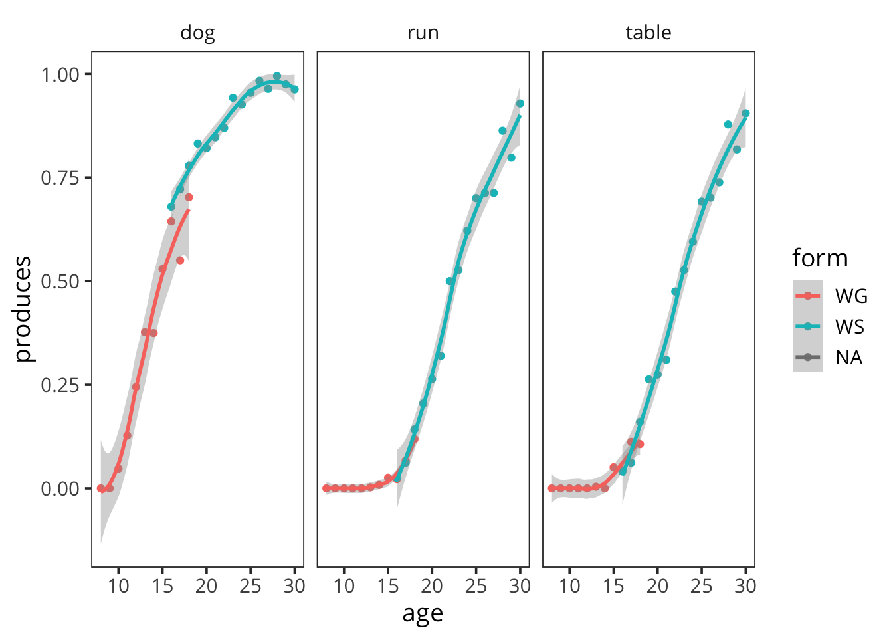

C Stitching Across Forms

Figure C.1: WS and WG proportion production scores for a set of 25 randomly-sampled examples.
Because we use different forms for different ages, there are sometimes good reasons to combine data across forms to get a broader range of ages in a particular analysis. We call this combination “stitching.” This appendix provides some motivation for the practice. Figure C.1 shows 25 randomly-sampled items from the English (American) data. To a first approximation, production trajectories line up quite nicely with little or no visible gap between the two instruments.